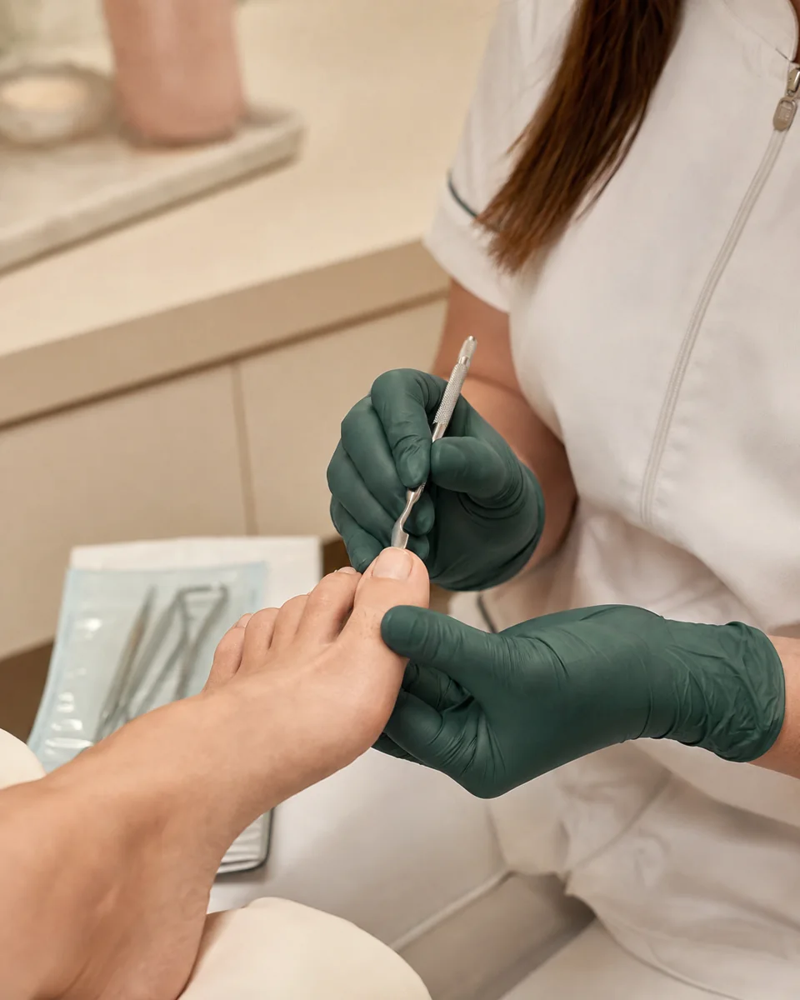
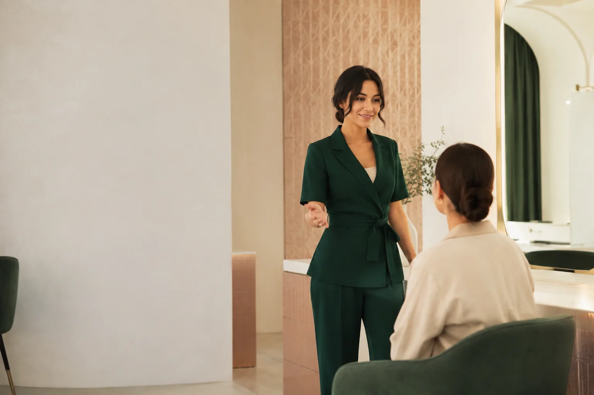
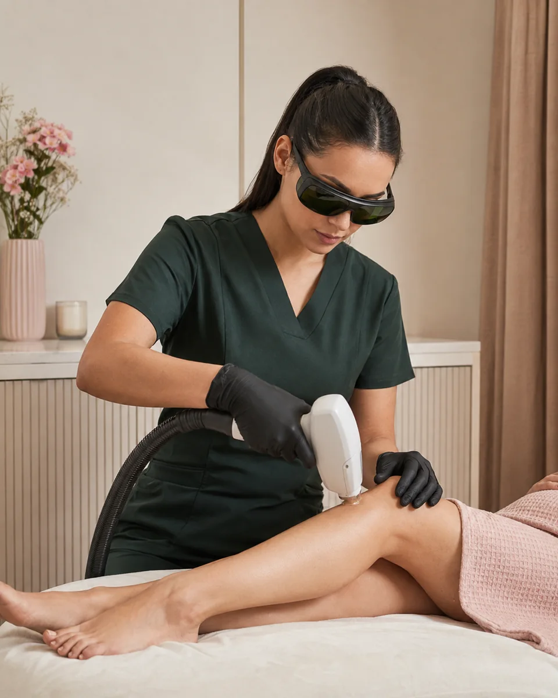
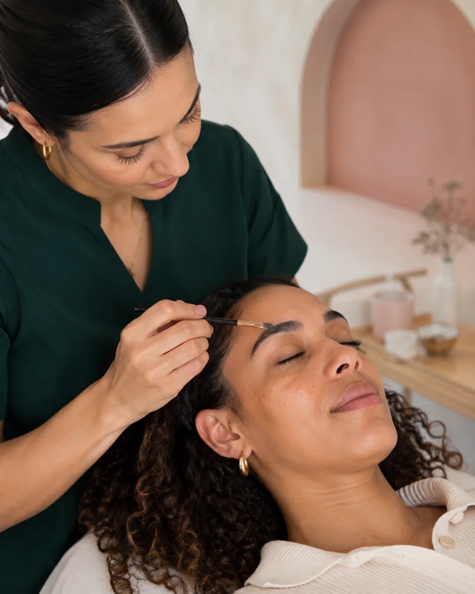
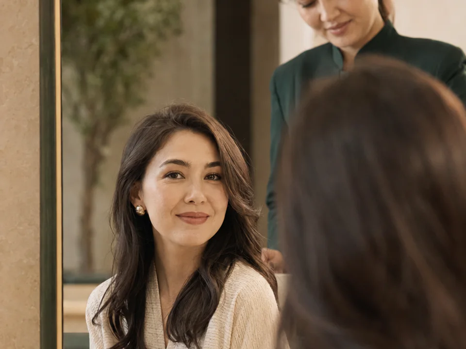

01Комфорт стоп
Подология
Деликатный уход за стопами и рекомендации по дальнейшим действиям.
Что можно обсудить
- Первичное обсуждение запроса
- Гигиенический уход
- Рекомендации по дальнейшим действиям
Салон красотыТашкент
Подология, лазер, брови и nail-сервис на Шота Руставели, 50.
Предварительная заявка · время подтвердит администратор

Выберите направление
Необязательно знать точное название процедуры — начните с направления.

01Комфорт стоп
Деликатный уход за стопами и рекомендации по дальнейшим действиям.

02Уход за кожей
Выбор зоны, подготовка и ограничения — до процедуры.

03Выразительность
Форма, оттенок и укладка с опорой на естественные черты.
Полный список
Выберите направление — оно сразу появится в заявке.
Спокойно и по делу
Предварительная заявка помогает заранее обозначить запрос и вопросы.
Необязательно знать точное название процедуры — опишите, что вас беспокоит.
Попросите назвать актуальную сумму до подтверждения времени.
Для лазера и подологии важно заранее уточнить подготовку и противопоказания.

Первый визит
Выбираете направление, дату и удобное время.
Администратор подтверждает стоимость, формат и свободное окно.
До начала процедуры согласовываете ожидания и ограничения.
Коротко о важном
Пока нет. Форма готовит предварительную заявку. Время становится подтверждённым только после ответа администратора.
Да, направления салона представлены для женщин и мужчин. Состав процедуры уточняется индивидуально.
Рекомендации зависят от аппарата и зоны. Запросите подтверждённую памятку у администратора до визита.
Нет. Салонный уход не является медицинской диагностикой или лечением. При соответствующих признаках нужен профильный врач.
Ташкент, ул. Шота Руставели, 50. Точную точку входа, парковку и часы работы нужно подтвердить у клиента перед публикацией.